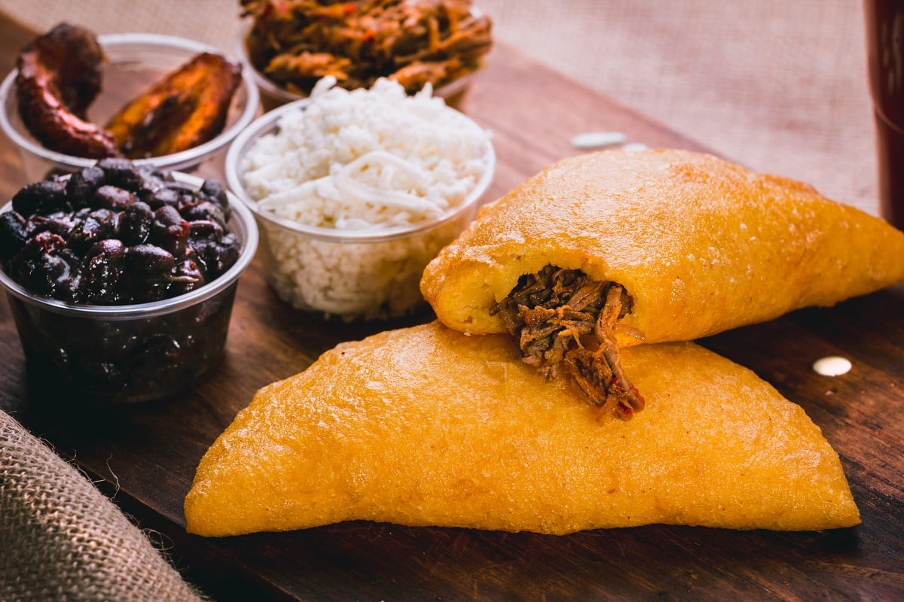

Empanada Recipe

How to make an empanada
But before moving on how to make an empanada let's explain what it is
An empanada is a traditional food from venezuelan too, In this country there is a fight between both (Arepas vs Empanadas). In Venezuela most of people eat arepas if they are at home, but when you are at the street and hungry an empanada is the easiest food to find because everyone in there houses or stores sell it
As well as arepas, empanadas have a lot of accompaniment
Now that you kind of know what an empanada is let's see what ingredients you will need for making one. Note: This is a recipe for making an empanada, not for what goes inside.
Empanada ingredients
- flour (HARINA PAN)
- wheat flour
- water
- salt
- sugar
- oil (this is optional beacuse you can bake it instate of frying it)
Preparation
- put the water in a bowl, add some sugar and salt to it
- the add the flour (HARINA PAN) to the water, try to do it slowly and wait for the flour to sink under the water.
- with your hands knead the mix
- then you have to look for a plastic bag and cut it in the form of a rectangle (this is where you are going to the mass a form of empanada)
- pick a ball of mass up and squash it over the plastic (it has to be in the middle and while squashing the mass has to be round)
- finally add the accompaniment in the middle of the round mass and close it like if it were a book
- now you need a bowl, a smaller one to use it for cutting the edged of the empanada (you have to do all of this with the plastic on)
- after that you can take the plastic of, pick your empanada up (with your hand, treat it pretty like a bautiful girl) and out it on hot oil until it turn gold
Note: If you didn't understand my explanation go here How to make and empanada